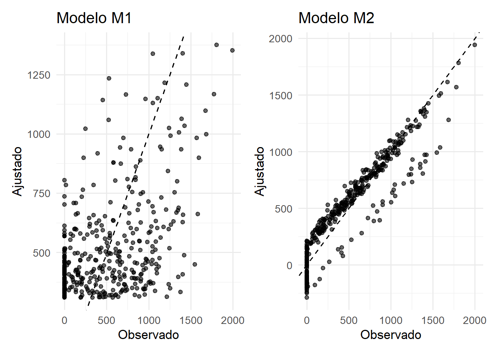

18 Qualidade de Ajuste e Comparação de Modelos
18.1 Introdução e motivação
Após ajustar um modelo de regressão, surge uma questão natural: quão bem esse modelo descreve os dados observados?
Em situações simples, essa pergunta pode parecer fácil de responder. Um modelo que produz resíduos menores ou previsões mais próximas dos valores observados parece, intuitivamente, superior a outro. Entretanto, a avaliação de um modelo envolve aspectos adicionais.
Considere dois modelos ajustados para a mesma variável resposta. O primeiro utiliza apenas uma variável explicativa, enquanto o segundo incorpora diversas covariáveis adicionais. Em geral, o modelo mais complexo apresentará melhor ajuste aos dados observados, pois possui maior flexibilidade para acomodar padrões presentes na amostra. Isso não significa, necessariamente, que ele seja mais útil ou mais adequado (Kutner et al., 2005; Montgomery; Peck; Vining, 2021).
Modelos excessivamente complexos podem capturar flutuações específicas da amostra em vez de representar relações sistemáticas do fenômeno estudado. Esse comportamento é conhecido como sobreajuste (overfitting) e pode comprometer a capacidade preditiva do modelo em novos conjuntos de dados (james2021?).
Por outro lado, modelos excessivamente simples podem deixar de incorporar variáveis relevantes, produzindo estimativas viesadas, menor poder explicativo ou previsões pouco precisas.
A comparação entre modelos envolve, portanto, um equilíbrio entre qualidade de ajuste, complexidade e interpretabilidade. Em alguns contextos, o objetivo principal é explicar relações entre variáveis. Em outros, o interesse está na previsão de novas observações. Há ainda situações em que modelos distintos representam hipóteses científicas concorrentes.
Por essa razão, a escolha de um modelo não deve ser baseada em um único indicador numérico. Diferentes medidas avaliam diferentes aspectos do ajuste e podem conduzir a conclusões distintas (Burnham; Anderson, 2002).
Neste capítulo, estudaremos algumas das medidas mais utilizadas para avaliar a qualidade de ajuste e comparar modelos de regressão, incluindo o coeficiente de determinação, o coeficiente de determinação ajustado, a variância residual, testes para comparação de modelos aninhados e critérios de informação como AIC e BIC.
18.1.1 Coeficiente de determinação
A medida mais conhecida de qualidade de ajuste é o coeficiente de determinação, denotado por
\[ R^2. \]
Ele é definido por
\[ R^2 = \frac{SQ_R}{SQ_T} = 1-\frac{SQ_{Res}}{SQ_T}. \]
Como
\[ 0 \le SQ_{Res} \le SQ_T, \]
segue que
\[ 0 \le R^2 \le 1. \]
O coeficiente de determinação representa a proporção da variabilidade observada em \(Y\) que é explicada pelo modelo.
Por exemplo, um valor
\[ R^2=0{,}80 \]
indica que aproximadamente 80% da variabilidade observada na variável resposta é explicada pelas variáveis incluídas no modelo.
Essa interpretação tornou o \(R^2\) uma das medidas mais utilizadas em regressão. Entretanto, ele possui limitações importantes.
A principal delas é que o coeficiente de determinação nunca diminui quando novas variáveis são adicionadas ao modelo. Mesmo que uma variável tenha pouca ou nenhuma relação com a resposta, sua inclusão tende a produzir um pequeno aumento em \(R^2\).
Consequentemente, valores elevados de \(R^2\) não garantem que o modelo seja adequado nem que as variáveis incluídas sejam relevantes (Kutner et al., 2005).
Além disso, o significado de um valor elevado ou reduzido de \(R^2\) depende fortemente do contexto de aplicação. Em algumas áreas experimentais, valores próximos de 0,90 podem ser comuns. Em estudos observacionais envolvendo fenômenos complexos, valores muito menores podem ainda ser considerados satisfatórios. Por essa razão, o coeficiente de determinação deve ser interpretado em conjunto com outras medidas de ajuste e com o conhecimento substantivo do problema.
18.1.2 Coeficiente de determinação ajustado
Uma forma de corrigir a tendência de crescimento artificial do coeficiente de determinação consiste em levar em consideração o número de parâmetros presentes no modelo.
O coeficiente de determinação ajustado é definido por
\[ R^2_{aj} = 1 - \frac{SQ_{Res}/(n-p-1)} {SQ_T/(n-1)}. \]
Utilizando a estimativa da variância residual,
\[ \hat\sigma^2 = \frac{SQ_{Res}}{n-p-1}, \]
podemos interpretar o \(R^2\) ajustado como uma versão penalizada do coeficiente de determinação.
Diferentemente de \(R^2\), o valor de
\[ R^2_{aj} \]
pode diminuir quando uma nova variável é incorporada ao modelo.
Isso ocorre porque a inclusão de um novo parâmetro reduz os graus de liberdade residuais. Assim, para que o \(R^2\) ajustado aumente, a redução em \(SQ_{Res}\) precisa ser suficientemente grande para compensar a maior complexidade do modelo.
Essa característica torna o \(R^2\) ajustado mais apropriado para comparar modelos com diferentes números de parâmetros.
Apesar dessa vantagem, ele continua sendo uma medida baseada exclusivamente no ajuste aos dados observados. Portanto, não avalia diretamente a capacidade preditiva do modelo nem garante que as variáveis selecionadas sejam cientificamente relevantes (Burnham; Anderson, 2002; Montgomery; Peck; Vining, 2021).
Em aplicações práticas, é comum observar situações em que dois modelos apresentam valores muito próximos de \(R^2\) ajustado. Nesses casos, critérios adicionais podem ser necessários para decidir entre eles.
18.1.3 Estimativa da variância residual
Outra medida frequentemente utilizada para avaliar a qualidade de ajuste é a variância residual estimada,
\[ \hat\sigma^2 = \frac{SQ_{Res}}{n-p-1}. \]
Sua raiz quadrada,
\[ \hat\sigma, \]
é conhecida como erro padrão residual.
Essa quantidade fornece uma medida da dispersão média dos resíduos em torno dos valores ajustados pelo modelo.
Como possui a mesma unidade de medida da variável resposta, o erro padrão residual costuma ser mais fácil de interpretar do que o coeficiente de determinação. Por exemplo, se a variável resposta for medida em quilogramas, então \(\hat\sigma\) também estará expresso em quilogramas.
Valores menores de \(\hat\sigma\) indicam que os resíduos tendem a permanecer mais próximos da superfície de regressão ajustada.
Assim como ocorre com \(SQ_{Res}\), a estimativa da variância residual tende a diminuir quando variáveis relevantes são incorporadas ao modelo. Entretanto, diferentemente do erro quadrático residual bruto, a divisão pelos graus de liberdade introduz uma correção para o número de parâmetros estimados.
Por essa razão, \(\hat\sigma^2\) e \(\hat\sigma\) são frequentemente utilizados como medidas complementares ao \(R^2\) ajustado na comparação entre modelos (Kutner et al., 2005; Seber; Lee, 2003).
18.2 Medidas de qualidade de ajuste
18.2.1 Decomposição da variabilidade
O coeficiente de determinação e diversas outras medidas de qualidade de ajuste estão fundamentados na decomposição da variabilidade da variável resposta.
Considere o modelo
\[ Y_i = \beta_0 + \beta_1X_{i1} + \cdots + \beta_pX_{ip} + \varepsilon_i. \]
Para cada observação, a diferença entre o valor observado e a média amostral pode ser escrita como
\[ Y_i-\bar Y = (\hat Y_i-\bar Y) + (Y_i-\hat Y_i). \]
Essa expressão mostra que o desvio total em relação à média pode ser decomposto em duas parcelas:
- uma associada ao modelo ajustado;
- outra associada aos resíduos.
Elevando ambos os lados ao quadrado e somando sobre todas as observações, obtemos a decomposição clássica
\[ SQ_T = SQ_R + SQ_{Res}, \]
em que
\[ SQ_T = \sum_{i=1}^{n} (Y_i-\bar Y)^2 \]
é a Soma de Quadrados Total,
\[ SQ_R = \sum_{i=1}^{n} (\hat Y_i-\bar Y)^2 \]
é a Soma de Quadrados da Regressão,
e
\[ SQ_{Res} = \sum_{i=1}^{n} (Y_i-\hat Y_i)^2 \]
é a Soma de Quadrados dos Resíduos.
Geometricamente, essa decomposição decorre da ortogonalidade entre os resíduos e o espaço gerado pelas colunas da matriz \(\mathbf{X}\), resultado já discutido nos capítulos anteriores (Montgomery; Peck; Vining, 2021; Seber; Lee, 2003).
A interpretação é direta:
- \(SQ_T\) mede a variabilidade total observada em \(Y\);
- \(SQ_R\) mede a parcela explicada pelo modelo;
- \(SQ_{Res}\) mede a parcela não explicada.
Quanto menor for \(SQ_Res\), melhor tende a ser o ajuste aos dados observados.
Essa observação, entretanto, deve ser interpretada com cautela. À medida que novas variáveis são incorporadas ao modelo, a soma de quadrados residual nunca aumenta. Em outras palavras, modelos mais complexos quase sempre produzem valores menores de \(SQ_{Res}\).
Por essa razão, medidas de qualidade de ajuste precisam considerar não apenas a redução dos resíduos, mas também a complexidade do modelo.
18.3 Comparação de modelos
Em muitas aplicações, o interesse não está apenas em avaliar a qualidade de ajuste de um único modelo, mas em comparar modelos concorrentes.
Considere, por exemplo, os modelos
\[ M_1: \quad Y = \beta_0 + \beta_1X_1 + \varepsilon \]
e
\[ M_2: \quad Y = \beta_0 + \beta_1X_1 + \beta_2X_2 + \varepsilon. \]
O segundo modelo contém todas as variáveis do primeiro e acrescenta uma nova covariável. Nesse caso, dizemos que os modelos são aninhados (nested models), pois \(M_1\) pode ser obtido impondo
\[ \beta_2=0 \]
em \(M_2\).
A comparação entre modelos aninhados constitui uma das situações mais frequentes em regressão, pois permite avaliar se a inclusão de novos parâmetros produz uma melhora suficientemente grande no ajuste para justificar o aumento da complexidade do modelo.
18.3.1 Comparação de modelos aninhados
Considere dois modelos aninhados:
\[ M_R \subset M_C, \]
em que:
- \(M_R\) representa o modelo reduzido;
- \(M_C\) representa o modelo completo.
O modelo reduzido é obtido impondo restrições sobre parâmetros presentes no modelo completo.
De forma geral, queremos testar
\[ H_0: \beta_{j_1} = \beta_{j_2} = \cdots = \beta_{j_q} = 0 \]
contra
\[ H_1: \text{pelo menos um desses parâmetros é diferente de zero}. \]
A estatística de teste é dada por
\[ F = \frac{ [SQ_{Res}(R)-SQ_{Res}(C)]/q }{ SQ_{Res}(C)/(n-p_C-1) }, \]
em que:
- \(SQ_{Res}(R)\) é a soma de quadrados residual do modelo reduzido;
- \(SQ_{Res}(C)\) é a soma de quadrados residual do modelo completo;
- \(q\) é o número de restrições impostas;
- \(p_C\) é o número de covariáveis do modelo completo.
Sob a hipótese nula,
\[ F \sim F_{q,n-p_C-1}. \]
Valores elevados da estatística indicam que a redução obtida em \(SQ_{Res}\) é grande em relação à variabilidade residual, fornecendo evidências favoráveis à inclusão dos parâmetros adicionais (Kutner et al., 2005; Montgomery; Peck; Vining, 2021).
Essa formulação generaliza o teste global de significância do modelo discutido anteriormente. Na prática, ela permite avaliar a contribuição conjunta de grupos de variáveis, interações, polinômios ou quaisquer outros termos adicionais.
18.3.2 Exemplo de interpretação
Suponha que desejamos comparar os modelos
\[ M_1: \quad Balance = \beta_0 + \beta_1Income + \varepsilon \]
e
\[ M_2: \quad Balance = \beta_0 + \beta_1Income + \beta_2Rating + \varepsilon. \]
Se o teste indicar rejeição de
\[ H_0:\beta_2=0, \]
concluímos que a variável Rating fornece informação adicional para explicar a variabilidade de Balance, além daquela já fornecida por Income.
Caso contrário, a inclusão dessa variável pode não ser justificada sob a perspectiva inferencial.
Embora os testes para modelos aninhados sejam amplamente utilizados, eles não constituem o único critério de comparação. Em muitos problemas, o interesse está menos associado à significância estatística e mais relacionado ao equilíbrio entre ajuste e complexidade. Esse é o contexto em que surgem os critérios de informação.
18.3.3 Critério de Informação de Akaike
O Critério de Informação de Akaike (AIC) foi proposto por Akaike (1974) como uma medida para comparar modelos ajustados aos mesmos dados.
Sua forma geral é
\[ AIC = -2\log(L) + 2k, \]
em que:
- \(L\) representa a função de verossimilhança maximizada;
- \(k\) representa o número de parâmetros estimados.
O primeiro termo recompensa modelos que se ajustam bem aos dados. O segundo termo penaliza modelos excessivamente complexos.
Assim, o AIC procura equilibrar qualidade de ajuste e número de parâmetros.
Para modelos lineares normais, uma forma equivalente pode ser escrita como
\[ AIC = n\log\left(\frac{SQ_{Res}}{n}\right) + 2k + C, \]
em que \(C\) é uma constante comum aos modelos comparados.
A interpretação é simples:
Entre modelos ajustados aos mesmos dados, valores menores de AIC indicam modelos preferíveis.
É importante destacar que o AIC não possui interpretação absoluta. Seu valor isoladamente não informa se um modelo é bom ou ruim. O interesse está na comparação entre modelos concorrentes ajustados ao mesmo conjunto de dados (Burnham; Anderson, 2002).
Uma característica importante do AIC é sua orientação para desempenho preditivo. Em geral, ele tende a favorecer modelos ligeiramente mais complexos do que outros critérios de seleção.
18.3.4 Critério de Informação Bayesiano
O Critério de Informação Bayesiano (BIC), proposto por Schwarz (1978), possui estrutura semelhante ao AIC:
\[ BIC = -2\log(L) + k\log(n). \]
A principal diferença está no termo de penalização.
Enquanto o AIC utiliza
\[ 2k, \]
o BIC utiliza
\[ k\log(n). \]
Como
\[ \log(n)>2 \]
para amostras moderadas e grandes, o BIC geralmente impõe penalização mais severa à complexidade do modelo.
Consequentemente, o BIC tende a selecionar modelos mais parcimoniosos.
Assim como ocorre com o AIC, valores menores são preferíveis.
Em muitas aplicações, AIC e BIC conduzem à mesma conclusão. Entretanto, não é raro que produzam recomendações distintas.
Quando isso ocorre, o AIC costuma favorecer modelos com maior capacidade preditiva, enquanto o BIC tende a favorecer modelos menores e mais simples (Burnham; Anderson, 2002; Montgomery; Peck; Vining, 2021).
Por essa razão, a escolha entre AIC e BIC deve considerar os objetivos da análise e não apenas o valor numérico produzido por cada critério.
18.3.5 Critério \(C_p\) de Mallows
Outra medida clássica para comparação de modelos é o critério \(C_p\) de Mallows.
Seu objetivo é avaliar simultaneamente viés e precisão de modelos candidatos, especialmente em problemas de seleção de variáveis.
Uma forma comum de escrevê-lo é
\[ C_p = \frac{SQ_{Res}(p)}{\hat\sigma_F^2} - (n-2p), \]
em que:
- \(SQ_{Res}(p)\) corresponde à soma de quadrados residual do modelo candidato;
- \(\hat\sigma_F^2\) corresponde à variância residual estimada a partir de um modelo considerado completo;
- \(p\) representa o número de parâmetros do modelo candidato.
Valores de \(C_p\) próximos de \(p\) costumam indicar modelos adequados (Kutner et al., 2005; Montgomery; Peck; Vining, 2021).
Na prática, o critério é frequentemente utilizado em conjunto com outras medidas, como AIC, BIC e \(R^2\) ajustado.
Nenhuma dessas medidas deve ser interpretada isoladamente. É relativamente comum que modelos distintos apresentem desempenhos semelhantes segundo um critério e resultados diferentes segundo outro.
Por essa razão, a comparação de modelos geralmente envolve a análise conjunta de múltiplos indicadores.
18.4 Multicolinearidade e estabilidade dos modelos
A inclusão de novas variáveis em um modelo nem sempre resulta em estimativas mais precisas ou interpretações mais claras. Quando duas ou mais covariáveis apresentam forte associação linear entre si, surge o fenômeno conhecido como multicolinearidade (Kutner et al., 2005; Montgomery; Peck; Vining, 2021).
Considere, por exemplo, um modelo que utiliza simultaneamente renda anual, patrimônio acumulado e limite de crédito para explicar uma variável resposta financeira. Como essas variáveis tendem a estar fortemente relacionadas, torna-se difícil separar suas contribuições individuais.
Do ponto de vista da estimação, a multicolinearidade afeta diretamente a matriz
\[ \mathbf{X}^{\top}\mathbf{X}. \]
À medida que as colunas de \(\mathbf{X}\) se tornam mais próximas de combinações lineares entre si, a inversão dessa matriz torna-se numericamente menos estável.
Como consequência:
- os erros padrão dos coeficientes aumentam;
- intervalos de confiança tornam-se mais amplos;
- testes individuais podem perder poder;
- pequenas alterações nos dados podem produzir mudanças consideráveis nas estimativas.
Nessas situações, não é incomum observar modelos com elevado \(R^2\) e, simultaneamente, coeficientes individuais não significativos.
Esse comportamento não indica necessariamente ausência de relação entre as variáveis explicativas e a resposta. Muitas vezes ele reflete apenas a dificuldade de distinguir os efeitos individuais das covariáveis.
Uma medida frequentemente utilizada para avaliar multicolinearidade é o Fator de Inflação da Variância (Variance Inflation Factor), definido por
\[ VIF_j = \frac{1}{1-R_j^2}, \]
em que \(R_j^2\) corresponde ao coeficiente de determinação obtido ao regredir a variável \(X_j\) sobre as demais covariáveis do modelo.
Valores elevados de \(VIF_j\) indicam que a variância do estimador de \(\beta_j\) está sendo inflacionada pela presença de correlação entre as variáveis explicativas.
Embora não exista um limite universalmente aceito, valores acima de 5 ou 10 são frequentemente utilizados como sinais de possível multicolinearidade (Montgomery; Peck; Vining, 2021).
A presença de multicolinearidade não invalida o modelo nem afeta diretamente sua capacidade preditiva. O principal impacto ocorre sobre a interpretação individual dos coeficientes e sobre a precisão das inferências.
Por essa razão, a escolha de um modelo não deve ser baseada exclusivamente em medidas de ajuste. Um modelo ligeiramente mais simples pode produzir estimativas mais estáveis e interpretações mais claras do que um modelo excessivamente complexo.
18.5 Seleção de modelos
Em aplicações com muitas covariáveis, frequentemente surgem diversas especificações plausíveis para o mesmo problema. Nesses casos, torna-se necessário definir quais variáveis permanecerão no modelo final.
A seleção de modelos procura identificar subconjuntos de variáveis que produzam um equilíbrio adequado entre qualidade de ajuste, estabilidade das estimativas e simplicidade de interpretação (Kutner et al., 2005; Montgomery; Peck; Vining, 2021).
Os métodos de seleção automática mais conhecidos são:
- Forward Selection;
- Backward Elimination;
- Stepwise Selection;
- Best Subsets.
Embora amplamente utilizados, esses procedimentos devem ser vistos como ferramentas auxiliares e não como mecanismos automáticos de descoberta científica.
18.5.1 Forward Selection
O método Forward Selection inicia com um modelo contendo apenas o intercepto.
A cada etapa, avalia-se qual variável produz a maior melhoria segundo um critério previamente definido, como:
- redução de \(SQ_{Res}\);
- aumento de \(R^2_{aj}\);
- redução de AIC;
- redução de BIC.
A variável escolhida é incorporada ao modelo e o processo continua até que nenhuma inclusão adicional seja considerada vantajosa.
A principal vantagem desse procedimento é sua simplicidade computacional, especialmente quando o número de covariáveis é grande.
Entretanto, uma variável excluída nas etapas iniciais dificilmente será reconsiderada posteriormente, o que pode levar à perda de combinações potencialmente relevantes.
18.5.2 Backward Elimination
O procedimento Backward Elimination segue a lógica oposta.
O processo inicia com o modelo mais completo disponível:
\[ Y = \beta_0 + \beta_1X_1 + \cdots + \beta_pX_p + \varepsilon. \]
Em cada etapa, remove-se a variável cuja exclusão produz a menor perda de informação segundo o critério adotado.
O procedimento continua até que todas as variáveis remanescentes satisfaçam os critérios estabelecidos.
Esse método costuma funcionar bem quando o número de observações é suficientemente grande para permitir o ajuste do modelo completo.
18.5.3 Stepwise Selection
O método Stepwise combina características dos dois procedimentos anteriores.
Após cada inclusão de variável, o algoritmo reavalia as variáveis já presentes no modelo e verifica se alguma delas deve ser removida.
Esse mecanismo permite corrigir decisões tomadas em etapas anteriores e geralmente produz maior flexibilidade do que os métodos puramente forward ou backward.
Apesar disso, continua sujeito às limitações inerentes aos procedimentos automáticos de seleção.
18.5.4 Best Subsets
O método Best Subsets considera explicitamente diferentes combinações de variáveis.
Para cada tamanho de modelo, busca-se o subconjunto que produz o melhor desempenho segundo um critério escolhido.
Por exemplo, pode-se identificar:
- o melhor modelo com uma variável;
- o melhor modelo com duas variáveis;
- o melhor modelo com três variáveis;
- e assim sucessivamente.
Esse procedimento fornece uma visão mais abrangente do espaço de modelos possíveis.
Sua principal limitação é o custo computacional, que cresce rapidamente com o número de covariáveis.
Para um conjunto com \(p\) variáveis explicativas, existem
\[ 2^p \]
submodelos possíveis.
Assim, o método torna-se inviável para valores muito elevados de \(p\).
18.6 Sobreajuste, parcimônia e capacidade preditiva
Uma característica comum dos procedimentos de seleção é a busca por equilíbrio entre ajuste e complexidade.
À medida que novas variáveis são incorporadas ao modelo, o ajuste aos dados observados tende a melhorar. Entretanto, parte dessa melhoria pode corresponder apenas à adaptação a particularidades da amostra utilizada.
Esse fenômeno é conhecido como sobreajuste (overfitting) (Burnham; Anderson, 2002; james2021?).
Modelos sobreajustados frequentemente apresentam:
- elevado \(R^2\);
- resíduos reduzidos;
- excelente desempenho na amostra utilizada para estimação.
Entretanto, quando aplicados a novos dados, seu desempenho pode deteriorar-se substancialmente.
Por esse motivo, o melhor modelo nem sempre é aquele que produz o maior valor de \(R^2\) ou o menor valor de \(SQ_{Res}\).
A ideia de parcimônia consiste em preferir modelos mais simples sempre que eles apresentem desempenho semelhante ao de alternativas mais complexas.
Esse princípio está presente em diversos critérios discutidos anteriormente, especialmente no AIC, no BIC e no critério \(C_p\).
Em aplicações preditivas, a avaliação do modelo pode ser complementada por técnicas de validação, como:
- divisão entre amostras de treinamento e teste;
- validação cruzada;
- reamostragem.
Esses procedimentos avaliam o comportamento do modelo em observações que não participaram do processo de estimação, fornecendo uma medida mais realista de sua capacidade preditiva.
Em síntese, a comparação de modelos envolve múltiplos critérios. Medidas de ajuste, critérios de informação, estabilidade das estimativas, interpretabilidade e capacidade preditiva devem ser analisados conjuntamente. Nenhum indicador isolado é suficiente para determinar qual modelo deve ser adotado em todas as situações.
18.7 Exemplo ilustrativo
Para ilustrar algumas das medidas discutidas neste capítulo, utilizaremos a base Credit, disponível no pacote ISLR.
Essa base contém informações financeiras de clientes e é frequentemente utilizada em exemplos de regressão múltipla. A variável resposta será o saldo devedor do cartão de crédito (Balance), enquanto algumas características dos clientes serão utilizadas como variáveis explicativas.
Inicialmente, consideremos os modelos
\[ M_1: \quad Balance = \beta_0 + \beta_1Income + \varepsilon \]
e
\[ M_2: \quad Balance = \beta_0 + \beta_1Income + \beta_2Rating + \varepsilon. \]
O segundo modelo incorpora a variável Rating, associada à classificação de crédito do cliente.
A figura a seguir apresenta os valores observados e ajustados para ambos os modelos.
A inspeção visual sugere que o modelo contendo Rating acompanha mais de perto os valores observados. Entretanto, a comparação formal exige medidas quantitativas.
A tabela seguinte resume alguns indicadores de qualidade de ajuste.
| Modelo | R² | R² ajustado | AIC | BIC | Erro padrão residual |
|---|---|---|---|---|---|
| M1 | 0.215 | 0.213 | 5947.894 | 5959.869 | 407.865 |
| M2 | 0.875 | 0.874 | 5214.557 | 5230.523 | 162.881 |
A análise conjunta dessas medidas permite avaliar se a melhora obtida pelo modelo mais complexo é suficientemente grande para justificar a inclusão da variável adicional.
Também podemos realizar uma comparação formal entre os dois modelos por meio do teste \(F\) para modelos aninhados.
| term | df.residual | rss | df | sumsq | statistic | p.value |
|---|---|---|---|---|---|---|
| Balance ~ Income | 398 | 66208745 | NA | NA | NA | NA |
| Balance ~ Income + Rating | 397 | 10532541 | 1 | 55676203 | 2098.59 | 0 |
Nesse caso, a hipótese nula afirma que, após considerar a variável Income, a variável Rating não fornece informação adicional para explicar a variabilidade de Balance.
A estatística \(F\) compara a redução observada na soma de quadrados residual com a variabilidade residual do modelo completo. Valores elevados dessa estatística indicam que a inclusão da nova variável produz uma melhora substancial no ajuste.
Observa-se que a inclusão de Rating reduz a soma de quadrados residual de aproximadamente 66,2 milhões para 10,5 milhões, produzindo uma estatística
\[ F \approx 2098{,}6. \]
Como o valor-\(p\) é extremamente pequeno (\(p < 0{,}001\)), rejeitamos a hipótese nula e concluímos que Rating contribui significativamente para explicar a variabilidade de Balance, mesmo após considerar o efeito de Income.
Esse resultado ilustra uma situação em que diferentes critérios de comparação conduzem à mesma conclusão: o modelo que incorpora Rating apresenta melhor ajuste e fornece evidências de que a variável adicionada contribui efetivamente para a explicação da resposta.
A decisão final não precisa ser baseada exclusivamente em um único critério. Em aplicações reais, é comum considerar simultaneamente:
- significância estatística;
- qualidade de ajuste;
- critérios de informação;
- estabilidade das estimativas;
- facilidade de interpretação;
- objetivo da análise.
Modelos com desempenho semelhante frequentemente levam à escolha da alternativa mais simples, especialmente quando a perda de ajuste é pequena. Em contrapartida, quando a inclusão de novas variáveis produz ganhos substanciais de explicação ou previsão, modelos mais complexos podem ser preferíveis.